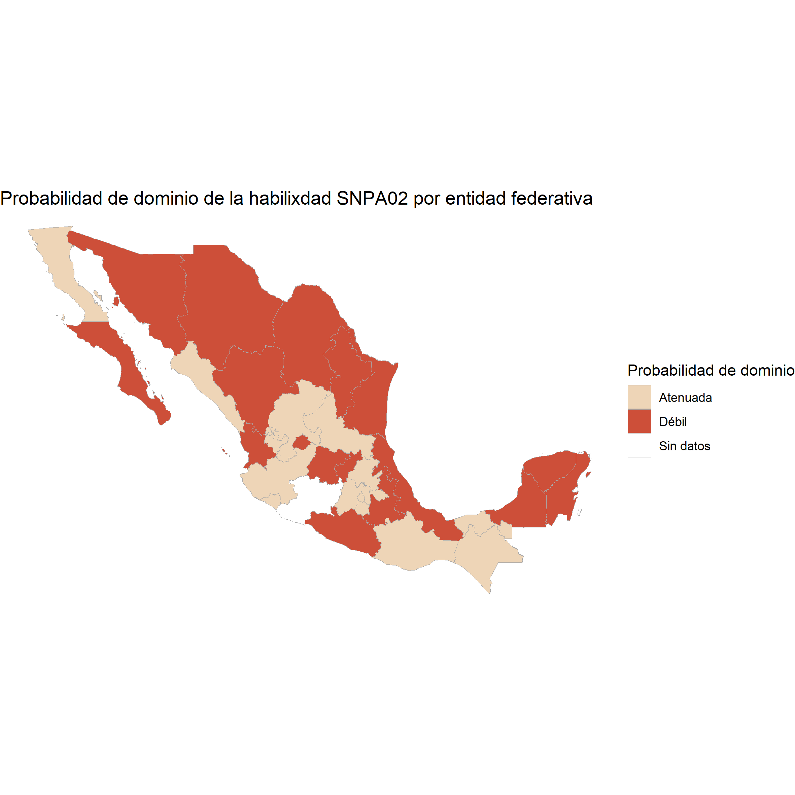
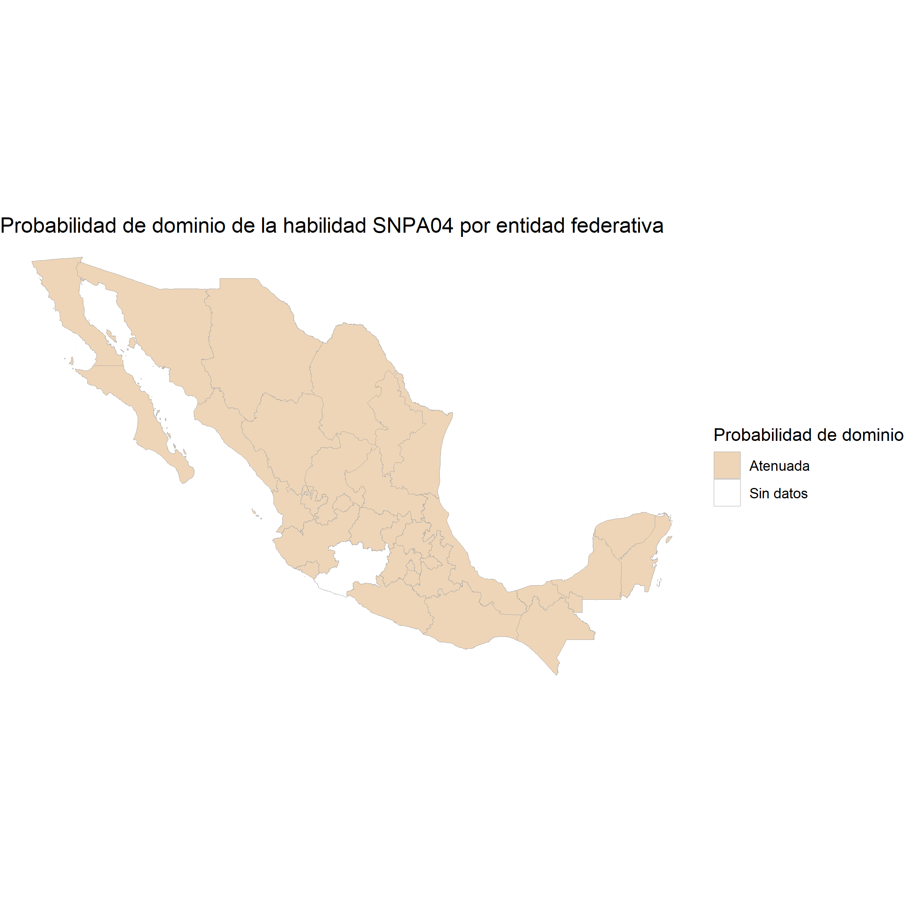
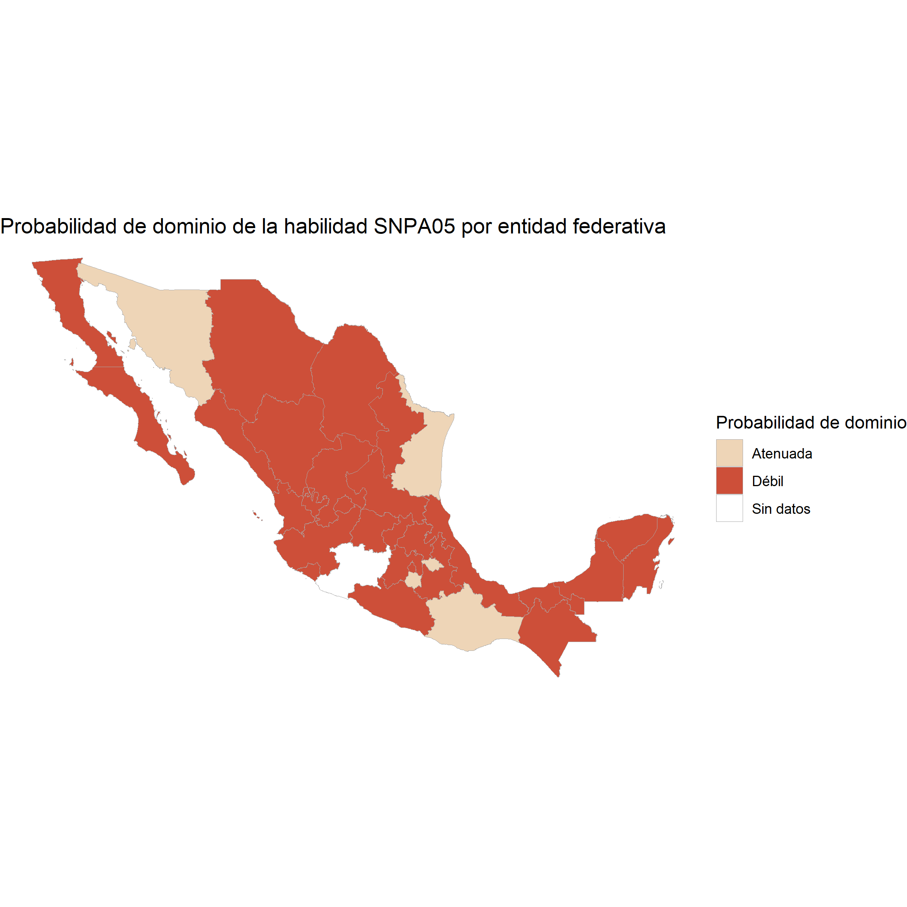
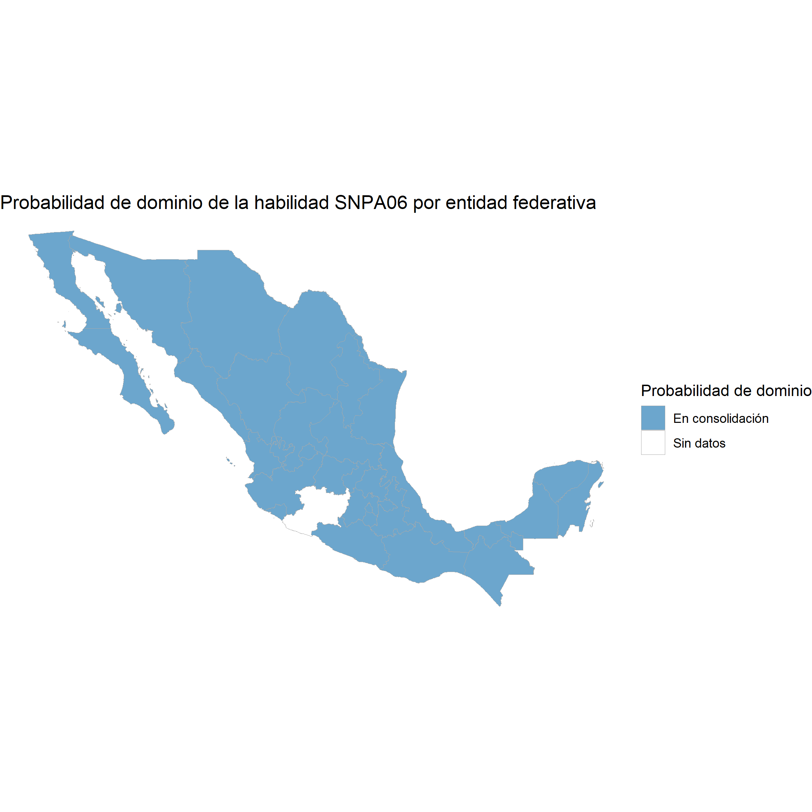
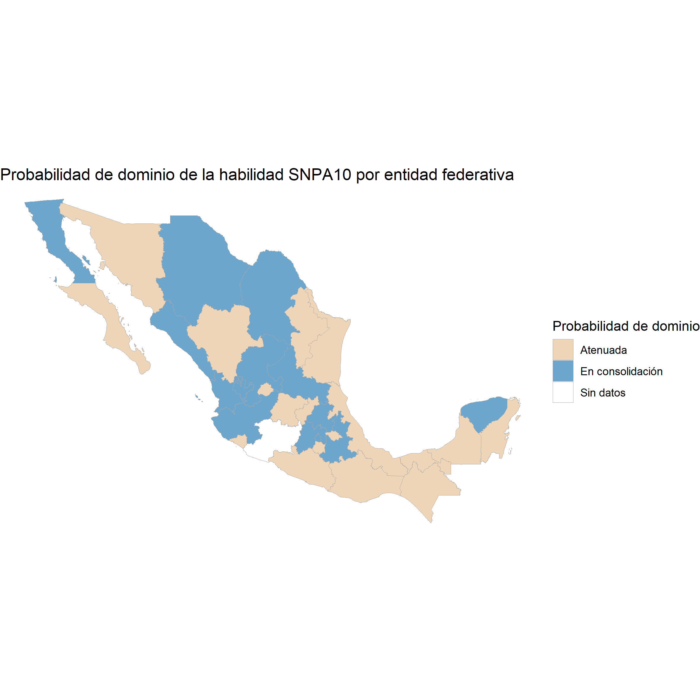
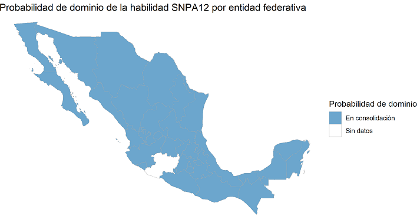
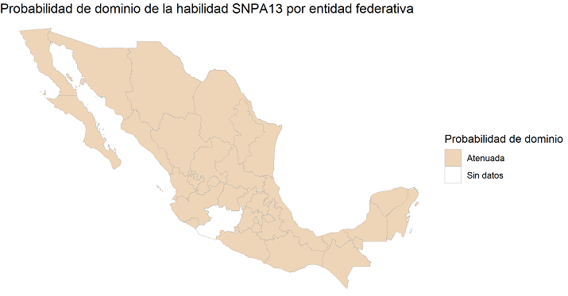

Eje 3: Sentido Numérico y Pensamiento Algebraico
A continuación se presentan los mapas de calor que por cada una de las 12 habilidades que componen al Eje 1, permite identificar en qué estados se detecta el dominio de estas habilidades y en qué estados es necesario fortalecer el aprendizaje de nuestros estudiantes
SNPA01: Comprensión de problemas matemáticos contextualizados

SNPA02: Comprensión del Sistema Internacional de Unidades (SIU)

SNPA03: Aplicación de operaciones aritméticas básicas
SNPA04: Representación del modelo aditivo de números fraccionarios

SNPA05: Amplificación de fracciones (Equivalencia de fracciones por amplificación)

SNPA06: Representación del modelo aritmético de la división

SNPA07: Representación de números fraccionarios

SNPA08: Inferencia del patrón que rige una secuencia de números naturales
SNPA09: Conversión de texto cardinal a números naturales y viceversa
SNPA10: Operación de valores posicionales con números naturales o decimales

SNPA11: Representación del modelo multiplicativo de números fraccionarios por naturales
SNPA12: Conversión de una regla verbal de progresión geométrica ascendente a una sucesión numérica

SNPA13: Deducción del patrón de una sucesión con progresión especial
